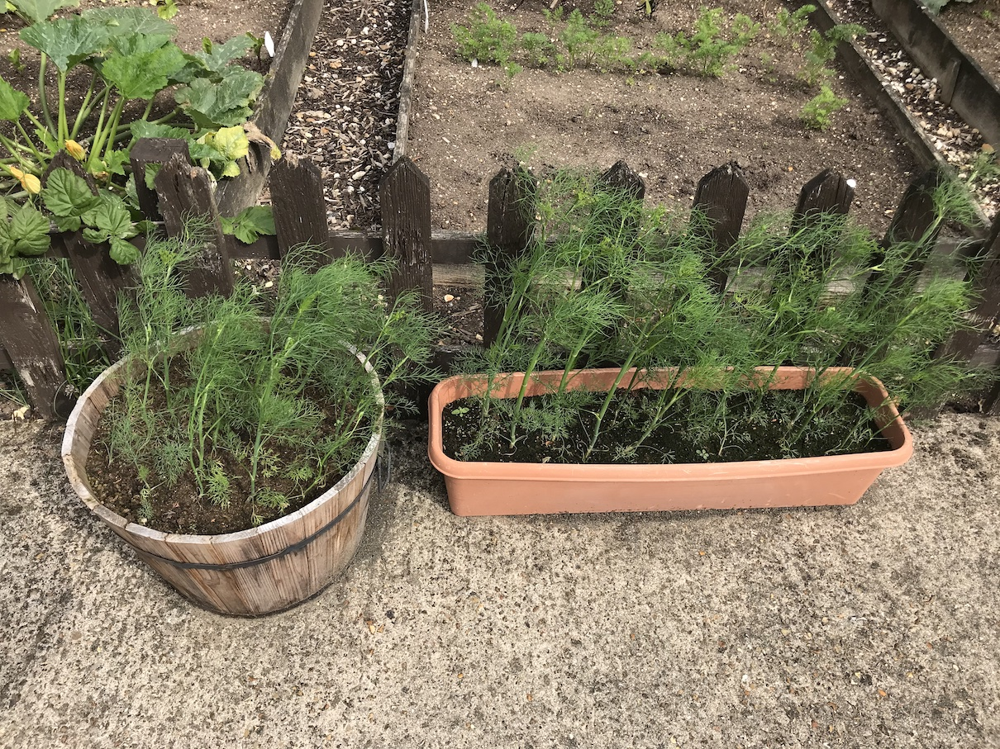
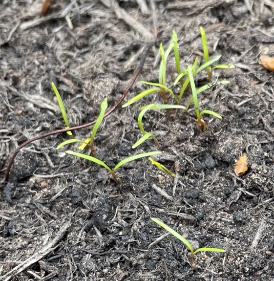
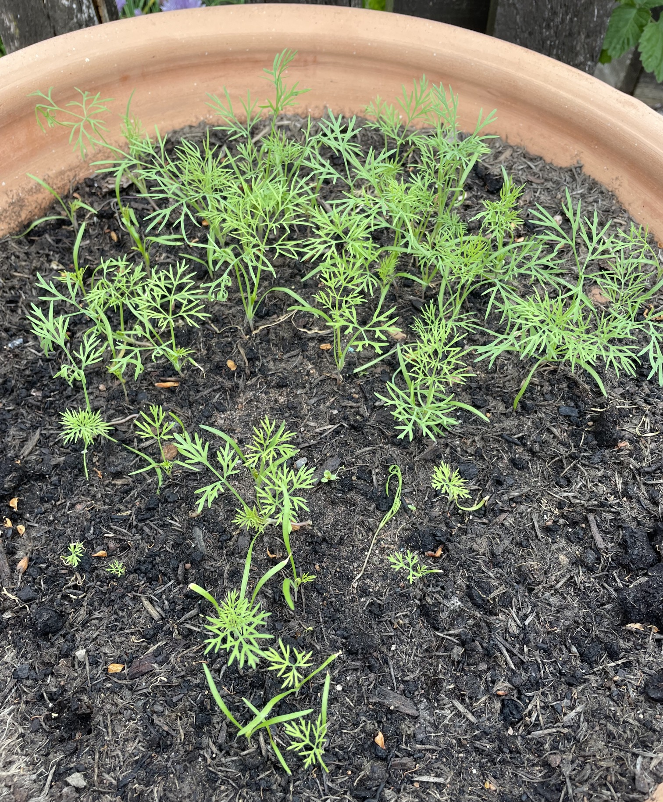
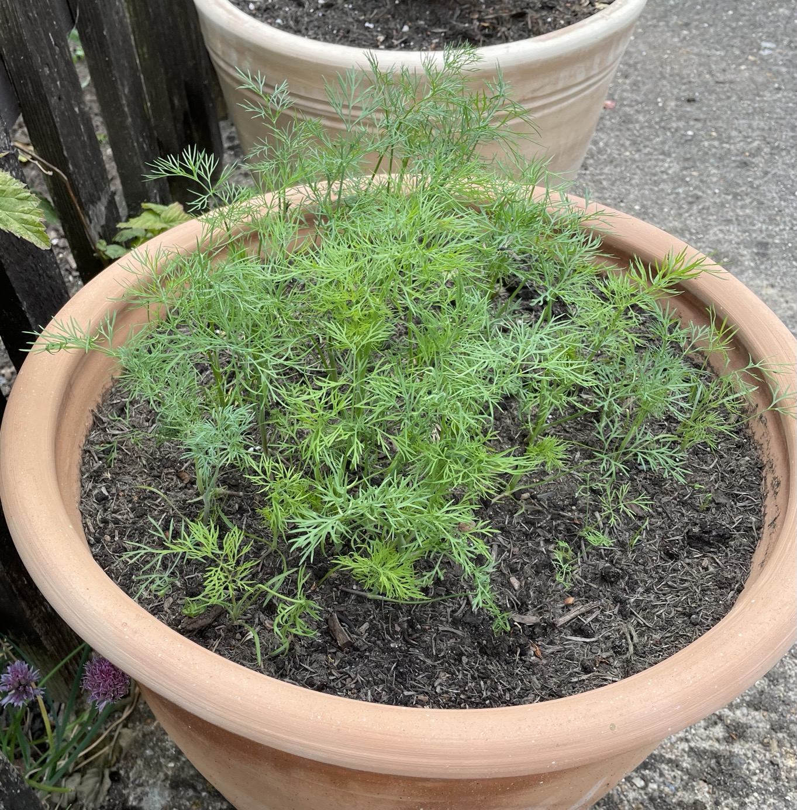
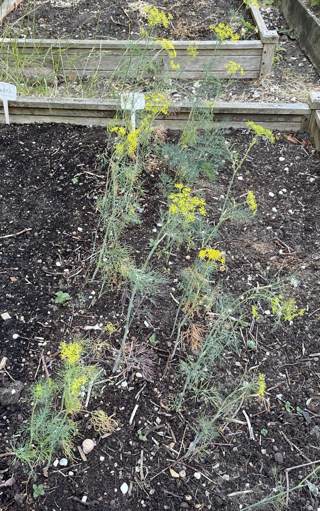
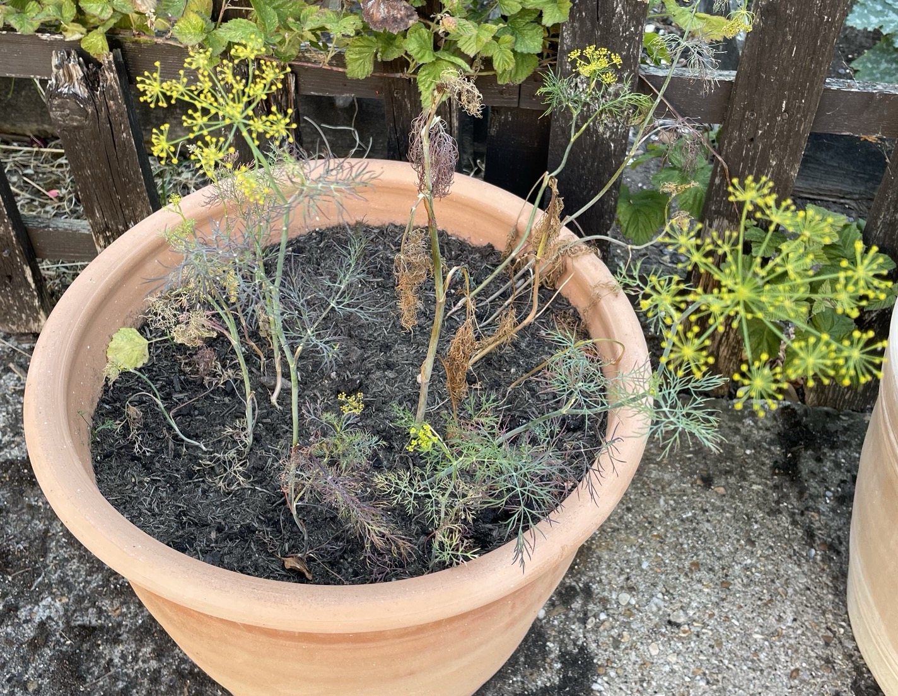

Dill
Planting
- Sew Mar-July
- 1cm deep in rows 15cm apart
- Thin to 15cm apart (or 10cm if in pot)
- Hates having roots disturbed so do not move
- Grows equally well in short and tall pots
2020
2020 Sep

2022
- Grew well initially but ravaged by aphids
Apr 20
Seeds sown
May 2 - 12 days

May 18 - 28 days

Jun 2 - 43 days

Jul 8

